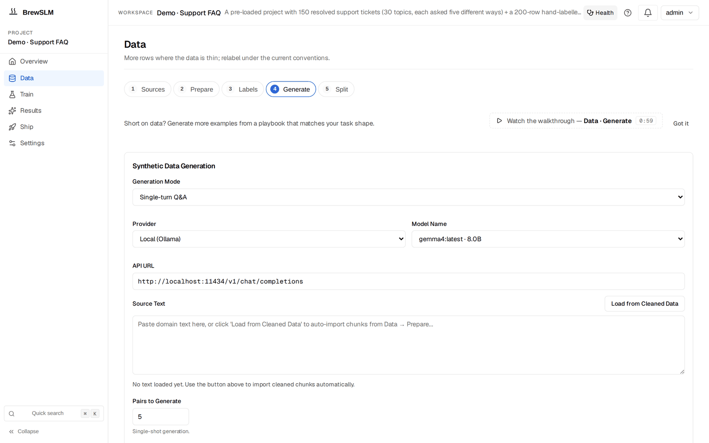

Build a support FAQ assistant with the rag-protocol recipe
By the end of this tutorial you'll have a small language model that answers questions from your FAQ corpus, cites the source chunk it pulled, refuses cleanly when the context can't answer the question, and ships behind a vLLM endpoint. The whole thing runs on a single small GPU (or CPU) and costs roughly nothing per query at inference time.
Before you start
This tutorial assumes BrewSLM is running locally at http://localhost:5173 with an admin user signed in. If you haven't done that yet, complete Tutorial 0 — Set up BrewSLM and your first project first. It takes ~15 minutes and is the prerequisite for every tutorial in this track.
You'll also want, before you start: ~60 rows of (context, question, answer) FAQ data in a CSV or JSONL file. Easiest source: scrape your help-center pages, or grab a row sample from SQuAD if you just want to validate the workflow.
Terms you'll see in this tutorial (click to expand)
- Recipe
- The training-plan template you pick when creating a project. For this tutorial:
rag-protocol. Defines the base model + adapter + pass/fail rule defaults. Set it under Train → Task → Change. - Adapter
- The mapping layer that converts your CSV/JSONL rows into training-ready fields. For rag-protocol, the adapter is
rag-grounded— it reads (context, question, answer) triples. - Answer key (gold set)
- Your trusted reference rows. What the model is evaluated against. In the BrewSLM UI this is the answer key, under Data → Labels. Aim for 60+ rows; quality beats quantity.
- Synth playbook
- A platform-provided generator that expands your gold set with controlled variations. rag-protocol ships three: paraphrase (citation drill), refusals, and format-robustness.
- Review queue
- Where every synth-generated row lands with
pendingstatus (Data → Generate → Details → Review queue). You accept, soft-reject, or purge — explicit review prevents bad data from sneaking into training. - Eval pack
- The pass/fail rules your trained model is scored against — the UI calls them the rule set (Results → Verdict). For rag-protocol the pack is
evalpack.rag_protocol.discipline— four rules (citation rate, hallucination, refusal match, F1). - Goal ledger
- The "% toward your stated goal" widget in the Readiness overview (Data → Sources → Details → Readiness overview). Expands into per-component progress (data ready, answer key ready, predicted pass probability, eval pass rate with a per-rule breakdown).
- Citation marker
- The
[#1]token in an answer that points at the source chunk. The training signal the model learns to emit when its answer is grounded in a retrieved passage. - Auto-RAG
- BrewSLM's BM25 retrieval index. Built automatically over your corpus at training completion; loaded at inference time to ground answers in retrieved chunks.
This is the canonical BrewSLM workflow for any project where the model needs to answer questions grounded in a body of text — customer FAQ, internal knowledge base, support transcripts, legal QA, product docs. The recipe stays the same; only your corpus changes. The platform learns the protocol; the index supplies the facts.
The end state is the model you'd actually deploy at a B2B SaaS company: small enough to host yourself, accurate enough to answer in production, honest enough to refuse when it shouldn't guess.
What you'll build
A protocol-aware support FAQ assistant. Concretely:
- "How long do I have to return an item?" → "You have 30 days from delivery to return unused items in their original packaging
[#1]." - "What time does your store close?" (off-topic — context is about refunds) → "I don't have enough context to answer that."
- "How LONG do I HAVE to RETURN?" (same question, different register) → Same answer, same citation marker, same format. The model is invariant under input register.
The model is a fine-tuned LoRA adapter on top of SmolLM2-135M-Instruct (or any small instruction-tuned model). Inference runs at sub-500ms latency on a single GPU; the BM25 retrieval index lives next to the adapter and gets refreshed whenever your FAQ changes — no retraining needed when you update content.
Key idea
The rag-protocol recipe teaches the model how to use a retrieval index — cite, refuse, format. The FACTS live in the index. That separation is why the same trained model works for ecom FAQ, legal QA, internal IT, and healthcare support without retraining for each.
Why a small model with RAG (and not a big LLM)
Three reasons enterprise teams pick a small fine-tuned model over a frontier model for narrow QA:
- Cost per query
- Frontier models charge per token; a 135M LoRA on your own GPU is roughly free at inference. For a support funnel doing 10,000 questions a day, that's the difference between a $300/month bill and a $30,000/month one.
- Latency
- Network hop + frontier-model queue is usually 1.5-3 seconds; a small model on local hardware is 200-500ms. For chat surfaces, latency below 500ms feels instant.
- Privacy + control
- Your customers' questions stay on your hardware. You control when the model updates. You can audit every weight and every retrieved chunk.
The trade-off is scope. A small model is not a general assistant. It's good at one bounded task — answering questions from one corpus, in one format. That's exactly the support-FAQ use case.
Choose your dataset
You need question / answer / source-paragraph triples. The source paragraph is the chunk of text the answer is grounded in; the citation marker [#1] in the answer points at it. Three common starting points:
- Your own help center
- Most companies already have FAQ pages with implicit (question → answer) linkage. Walk the page, extract the question (the H3/H4), the answer (the paragraph below), and the URL or section name as the citation. 60+ rows is the minimum useful gold set.
- Support transcripts
- Resolved tickets where the agent cited a KB article. The customer's question, the agent's answer, and the KB article's relevant paragraph become your triple. Export from Zendesk / Intercom / Salesforce as CSV.
- Public starting points
- SQuAD for general-domain QA practice; MS MARCO for passage retrieval. Use these to validate the workflow before pointing at your own data.
How many rows do you need?
60 high-quality rows beats 600 noisy ones. The synthetic playbooks will multiply your seed 3-5x; the eval pack scores quality, not volume. Aim for 60 gold rows that cover every category of question you expect in production.
Ingest and map
In BrewSLM, create a new project: on the projects home click + New Project, give it a name and a one-line brief ("Answer customer questions from our FAQ pages, cite the source passage, refuse when the context can't answer"), then Create project. You land on the project's Overview. Then pin the recipe: Train → Task → Change and pick rag-protocol. The recipe pre-fills the adapter pick (rag-grounded), the task profile (rag_qa), and the rule set (evalpack.rag_protocol.discipline). You can override any of these later, but the defaults are what we want.
If you opened Demo · Support FAQ in Tutorial 0 instead, it already holds 150 resolved tickets and a 200-row answer key — the screenshots in this tutorial come from that project. Its task is set to qa-sft, so make the same Train → Task → Change switch before you continue.
Then Data → Sources → Import dataset (auto-mapping) → Import dataset →. Point the wizard at your CSV or JSONL. It will scan the columns and propose:
{
"context": "Our refund policy allows returns within 30 days of delivery for unused items in original packaging.",
"question": "How long do I have to return an item?",
"answer": "You have 30 days from delivery to return unused items in their original packaging [#1]."
}The wizard shows you a confidence-scored preview of rows mapped through the adapter. Confirm the mapping when the preview looks right; the rows land in the project.
✓ Checkpoint: Data → Sources → Details → Readiness overview now shows your imported row count (e.g. "247 trainable rows"), and Sources summary in the same drawer lists your imported CSV/JSONL. If the mapping is wrong, the preview will show empty or mis-shaped rows — open Data → Split → Details → Schema mapping to check how the columns were bound, and re-run the import with the correct column for each field.
Citation marker format
The marker [#N] is what the model trains on. If your data uses a different convention (footnote numbers, document IDs, source URLs), normalize it during the cleanup step before training — the platform's discipline pack scores answers by token overlap with the context, not the marker format, but the model needs one consistent marker shape to learn.
Cleanup and PII review
Open Data → Prepare → Details → Quality and safety. It runs a deterministic scan over your imported rows and flags:
- PII signals — email addresses, phone numbers, credit-card-shaped strings inside the context or answers. Review each one; the platform will not auto-redact (per the project's safety rule).
- Near-duplicates — questions that paraphrase each other. Decide whether to keep one or both; for FAQ data, keeping near-dupes can hurt eval F1 because they bleed signal between train and test splits.
- Markdown / HTML artefacts in the context. Strip
<p>tags, leftover bullet markers, etc. Clean context = honest faithfulness scores at eval time.
You don't have to clean everything before training. You do have to clean the rows you're about to promote to the answer key — those are the rows the pass/fail rules score against, and they're the rows the synthetic playbooks seed from.
Pick the recipe: rag-protocol or qa-sft?
BrewSLM ships two recipes that look similar on the surface. Use this decision tree:
| Question | rag-protocol | qa-sft |
|---|---|---|
| Facts change frequently? | ✓ (index lives outside weights) | ✗ (model memorises facts at train time) |
| Many domains, same shape? | ✓ (one model, swap indexes per customer) | ✗ (one model per domain) |
| Need explicit citation in output? | ✓ (recipe trains [#N] marker) | ✗ (no citation discipline) |
| Need clean refusals? | ✓ (recipe trains canonical refusal phrase) | ✗ (model will guess) |
| Tiny stable corpus (under 30 facts)? | (over-engineering) | ✓ (memorisation works fine) |
| Fast iteration on a one-off? | (more pieces to wire) | ✓ (less ceremony) |
For an ecom FAQ that updates monthly, an internal support KB that grows weekly, or a legal QA system that touches new statutes regularly — rag-protocol wins. For a stable 20-row FAQ that hasn't changed in years, qa-sft is simpler.
Domain packs (when and why)
A domain pack is a bundle of cleaning rules, gold-seed criteria, eval thresholds, and Academy lesson tags scoped to one vertical. For our support FAQ use case, the platform ships a support pack and an ecommerce pack; legal teams use the legal pack.
Applying a domain pack is optional but compounding:
- Cleaning recipe — the support pack pre-loads PII patterns common to ticket data (customer email regexes, order ID redaction).
- Eval thresholds — the legal pack tightens citation-rate to 0.85 (the discipline pack defaults to 0.75) because legal needs higher faithfulness.
- Synthetic recipe constraints — the support pack tells the refusal playbook to include "I'll escalate to a human agent" as an acceptable refusal variant.
If a pack matches your vertical, apply it from Settings → Tools → Domain Packs. If your vertical isn't covered, the platform defaults work fine and you can build a custom pack later — domain pack is a refinement, not a prerequisite.
Build the answer key (manual + LLM-assisted)
The answer key — the gold set — is the trusted reference your model is evaluated against. It lives under Data → Labels. Aim for 60 rows minimum, 100+ ideal. Two complementary paths:
Path A — manual seeding
Open Data → Labels. Confirm "What kind of task is this?" if it asks, then work in the Answer key card (the Answer-key workbench with coverage and suggested rows sits in the step's Details drawer). For each row you add:
- Paste the source paragraph into
context— verbatim from your KB or FAQ page. - Write the question a real customer would ask. Use the actual wording you see in tickets, not a sanitised paraphrase.
- Write the answer. Make it short, factual, and end with the citation marker
[#1]pointing at the chunk.
Spend 30 minutes here. The model trains on signals you imprint with these rows — your answer key's tone, format, and refusal style are what the model will inherit.
Path B — LLM-assisted promotion
For larger imports (a few hundred FAQ pages), use the platform's "promote from raw" flow:
- Bulk-import your raw FAQ pages as context blocks.
- Open Data → Generate → Details → Playbooks, run the
POSITIVES_PARAPHRASEplaybook in seed mode — it asks a teacher model (Ollama or your own deployed model) to extract (question, answer, citation) triples from each context block. - Every generated triple lands in the review queue (Data → Generate → Details → Review queue) with
review_status="pending". Accept the good ones; they're promoted to the answer key.
This compresses 4 hours of manual gold-writing into 30 minutes of review. The trade-off: you have to actually review the rows. The platform will not auto-accept LLM-generated gold (per the safety rule); every promotion is an explicit decision.
✓ Checkpoint: the goal ledger's answer-key readiness row (Data → Sources → Details → Readiness overview) should now be green (60 rows ready; 100 recommended) or amber (fewer rows than recommended). The amber state is fine for now — you'll add more via synth in the next sections. If the row says nothing has been promoted, go back to Data → Labels and confirm rows landed in the Answer key card — the Answer key diagnostics block counts them.
Don't skip refusal examples
Your answer key must contain rows where the right answer is the canonical refusal phrase ("I don't have enough context to answer that."). Add 5-10 of these manually — questions that are obviously off-topic for your domain. Without refusal examples in gold, the model never learns to refuse, and the discipline pack's appropriate_refusal_rate gate will fail.
Splitting train, validation, test
BrewSLM splits when you click Run Split on Data → Split (the Train / Val / Test Split form; the split adapter should read rag-grounded). The default ratios are 80% train / 10% validation / 10% test, with a deterministic seed so the splits are reproducible.
Override the ratios in the same form when:
- Your answer key is small (under 80 rows): use 70/15/15 so the val/test splits have at least 10 rows each.
- You're working with class imbalance (some question categories rare): set Stratify By Field to the category column.
- You want a held-out test set you'll only score against at the very end: bump test to 20% and run repeated rounds against val only.
The prepared splits land as JSONL files in data/projects/<id>/datasets/ and get pinned in the project's manifest with row counts and a content hash. If anything drifts later (you re-imported, you ran another cleanup), the goal ledger flags the version mismatch and Data → Split → Details → Dataset versions lets you make a version active again or re-split.
Generate synthetic drills
This is where the rag-protocol recipe earns its name. Three playbooks ship with the recipe, each drilling a different protocol behaviour:
- POSITIVES_PARAPHRASE — citation drill
- Vary the wording of the question; keep the answer and citation marker verbatim. Goal: the model learns that the same fact answers many phrasings. Generate ~50 rows from your 60-row gold seed.
- REFUSALS — context-insufficient drill
- Generate questions that the provided context can't answer, paired with the canonical refusal phrase. Two flavours: off-topic context (real context but unrelated to the question) and no-context (empty context). Goal: the model learns to refuse on structural absence, not just on hard questions. Generate ~30 rows.
- FORMAT_ROBUSTNESS — register-invariance drill
- Same semantic question, different REGISTERS — terse ("Return window?"), verbose ("Could you please tell me how many days I have to return an item?"), formal, polite, imperative. Same answer, same format. Goal: the model holds its output format regardless of how the input is phrased. Generate ~40 rows.
Open Data → Generate. The step's form is the generic generator — Generation Mode (Single-turn Q&A for this tutorial), Provider, Model Name, Source Text with Load from Cleaned Data. The recipe's playbooks are under Details → Playbooks: the rag-protocol recipe shows three playbook cards. Click each, set the target count, pick a backend (Ollama is the free default; OpenAI / Anthropic / DeepSeek work if you have keys). Generation runs as a background job — the bell surfaces progress, and Details → Playbook center keeps each playbook's last run.

Don't generate everything before reviewing
Run the citation playbook first, generate 20 rows, review them, fix any prompt issues. Then run the refusal playbook with 20 rows. Then format. Generating 200 rows up front and reviewing all of them after the fact is harder than three quick cycles.
Review the synth queue
Every generated row lands in the Review queue (Data → Generate → Details → Review queue) with review_status="pending". The queue groups rows by source playbook so you can review one category at a time. For each row you have three actions:
- Accept — the row joins the training corpus on the next split.
- Reject — the row is soft-rejected with an optional reason ("hallucinated answer", "missing citation", "wrong refusal phrase"). The row stays on disk so you can audit later.
- Purge — a section-level action that physically deletes all rejected rows (optionally filtered by reason). Use this once you're confident the rejected pile is genuinely bad data.
The review queue is also where the platform's per-row confidence score shows. Rows scoring under 50% confidence are highlighted — those usually correlate with playbook validation failures (missing citation marker, no canonical refusal phrase, answer drift from the gold seed).
Training configuration
Open Train. The form shows Base model, Task, Seeds and Run name; the hyperparameters below sit under More options → Model and hyperparameters and LoRA and advanced training. The recipe defaults are sensible — for a first run, accept all of them:

- Base model
HuggingFaceTB/SmolLM2-135M-Instruct. Small, instruction-tuned, runs on consumer hardware. Alternative:Qwen/Qwen2.5-0.5B-Instructfor slightly better quality at 4x the size.- Adapter
- LoRA, rank 16, alpha 32, target modules
q_proj,k_proj,v_proj,o_proj. Standard for small models. - Learning rate
- 2e-4. Higher than full fine-tuning because LoRA has fewer trainable parameters.
- Epochs
- 3. For 200-row training sets, 3 epochs typically hits the loss plateau; 5+ overfits.
- Batch size + gradient accumulation
- Batch 4, accumulate 4 → effective batch 16. Adjust down on GPUs under 8 GB.
Expected runtime: 5-15 minutes on a single GPU (RTX 3060 or better), 15-30 minutes on CPU. The runs list below the form shows live loss; if loss isn't dropping after the first 50 steps, cancel the run and check your data — the dataset is probably misshapen.
✓ Checkpoint: in the runs list under Train, your run's loss drops from ~2-3 in the first few steps down to ~0.3-0.5 by the end. The bell shows a "training" notification with a percentage. When complete, BrewSLM runs the lift check against the base model on its own; Results → Verdict shows the summary card (or an Evaluate this run button if the check didn't run).
Read the trainability forecast
Before kicking off a real training run, the platform pre-computes a trainability forecast: given your current data + answer key + base model, what's the predicted F1 / pass rate? It lives under Train → More options → Plan and gaps; the goal ledger (Data → Sources → Details → Readiness overview) shows the same number as the predicted_pass row.
For a healthy support FAQ project you want:
- Predicted pass probability ≥ 65%. Below that means the data is genuinely too thin or imbalanced — add more gold, run more synth, or pick a stronger base model.
- Answer-key readiness ≥ 100% (i.e. ≥100 rows). Below that the forecast becomes noisy.
- Data ready = met (training rows + mapping + splits all green).
If the forecast is below 50%, training will almost certainly fail the pass/fail rules. Add data before you train — the goal ledger's blockers panel tells you which component is weakest.
Evaluation: the discipline gates
After training, the platform automatically evaluates against the project's rule set. Results → Verdict shows the Pass/fail rules card (run, rule set, PASS / FAIL, the failed required rules) below the summary card, both naming the run they describe. For rag-protocol projects the rule set is evalpack.rag_protocol.discipline, which gates four behaviours:


- Citation rate ≥ 75%
- Share of answers whose token overlap with the retrieved context meets the faithfulness threshold. A low score means the model is answering without grounding in the passages — the citation drills didn't take.
- Hallucination rate ≤ 15%
- Mean fraction of answer tokens NOT supported by the context. High score = the model is filling in facts that aren't in the passages.
- Appropriate refusal rate ≥ 80%
- The model's refusal behaviour matches the gold's — refuses when gold refuses, answers when gold answers. NOT a blanket-refusal incentive: a model that refuses every question scores 0 here because it never matches the answer-cases.
- F1 ≥ 0.55
- Standard SQuAD F1 over the answer span. The legacy QA-shape gate that lets you compare the rag-protocol score to your old qa-sft baseline.
The Pass/fail rules card names the failed required rules, and the goal ledger's eval_pass_rate row expands into a per-rule breakdown so you see exactly which discipline is failing — "citation 72%/≥75% failed, hallucination 18%/≤15% failed, refusal 85%/≥80% passed."
When the eval fails (reroute trace)
Common failure patterns and the fix for each:
| Symptom | Root cause | Fix |
|---|---|---|
| Citation rate < 60% | Not enough citation drills in training | Run another POSITIVES_PARAPHRASE round (50+ rows), retrain |
| Hallucination rate > 30% | Gold set too thin; model has no grounded examples to imitate | Add 30+ gold rows, focus on contexts the current model gets wrong |
| Refusal rate < 50% | Not enough REFUSALS playbook rows in training | Run the refusal playbook for 30+ rows, retrain |
| F1 strong but all discipline gates fail | Model memorised answers without learning the protocol | Stronger refusal/citation drills; consider switching to a larger base model |
| Every gate fails by 20+ points | Task is knowledge-bound, not behaviour-bound | Accept the platform's reroute-to-RAG recommendation — base model + retrieval may be enough |
When the platform's post-eval decision engine recommends a reroute, the recommendation card sits on Results → Failures. Expand the "Why this fired?" disclosure on each signal. You'll see the actual numbers ("Jaccard 0.18 < 0.20 threshold", "matched_keywords: ['answer questions about']") rather than just the recommendation verb. If the trace looks right, click "Switch to RAG (keeps your answer key)" — the platform clones the project as a RAG-first sibling and you can compare both side by side.
The honest move
Knowing when NOT to fine-tune is as valuable as knowing how. If the discipline pack flags hallucination at 35% and the reroute trace says your task is knowledge-bound, more training won't help. Take the reroute, run the base-model-plus-retrieval comparison, ship whichever wins. The platform refusing to let you grind epochs against a problem training can't solve is a feature.
Ship the model
Once the rule set passes, ship in three steps:
- Export the LoRA adapter. Open Ship → Package. In the New export form pick the run under Experiment, the Format (Hugging Face for the adapter; GGUF (CPU) if you want an Ollama-ready file), the deployment targets, then Run Export. The export appears in the Releases table below. The platform writes the adapter weights, the tokenizer config, and a deploy manifest into
data/projects/<id>/exports/. The adapter is ~5-15 MB; the base model is loaded fresh at deploy time. - Deploy via vLLM (or Ollama). The recipe's
target_profileisvllm_serverby default. The export bundle includes a vLLM launch script:
Ollama variant:cd data/projects/1/exports/run-2026-06-04 ./deploy-vllm.sh # Serves the base model + LoRA adapter on localhost:8000 # Auto-RAG BM25 index loaded from data/projects/1/auto_rag/./deploy-ollama.sh. Either way the BM25 retrieval index is loaded at process start; new FAQ entries refresh the index without restarting the server. - Smoke-test in the playground. Open Results → Try it, set Provider to "Trained run (this project)" and pick your run under Training run. Ask 10 real customer questions; check that each answer cites a chunk and that off-topic questions get the canonical refusal. Each reply's retrieval chip tells you what was retrieved for it — your sanity check.
What's next
You have a deployed protocol-aware support assistant. Three obvious next moves:
- Swap the corpus
- The same trained adapter works for legal QA, healthcare support, internal IT, ecommerce returns — anywhere you have a (context, question, answer) shape. Build a new index over the new corpus; no retraining needed. This is the protocol-over-domain payoff.
- Refresh the index monthly
- FAQ content changes. Schedule a periodic re-ingest of your help center; the BM25 index rebuilds in seconds. The trained adapter doesn't care which facts are in the index — it cares that they're cited.
- Active learning loop
- Capture real customer questions that produced low-confidence answers. Promote the best ones into the answer key; retrain when it grows by ~50 rows. Over a quarter, the model gets noticeably sharper on the questions your customers actually ask.
The next tutorial in this series picks a different recipe: SQL injection classifier — same end-to-end shape, classification recipe, hard-negative drills, per-class precision floors. Same workflow, different platform path.
Key terms
- rag-protocol recipe
- BrewSLM recipe that trains a small model to cite the retrieved chunk, refuse cleanly, and hold output format. Domain-agnostic — facts live in the retrieval index, not the weights.
- Citation marker
- The
[#N]token in an answer that points at the source chunk. The training signal the model imprints from the gold + synth data. - Canonical refusal phrase
- "I don't have enough context to answer that." The single recognisable shape the model emits when the retrieval is insufficient; downstream consumers can detect it.
- Discipline gates
- The four protocol-specific gates in
evalpack.rag_protocol.discipline: citation rate, hallucination rate, appropriate refusal rate, F1. - Goal ledger
- The single "% toward your stated goal" widget in the Readiness overview (Data → Sources → Details), expanding into per-component readiness (data, answer key, predicted pass, eval pass rate with per-rule breakdown).
- Reroute-to-RAG
- One-click clone that creates a RAG-first sibling project (base model + retrieval, no LoRA). The "task is knowledge-bound, not behaviour-bound" escape hatch.
Check yourself
Answers are saved to this browser.